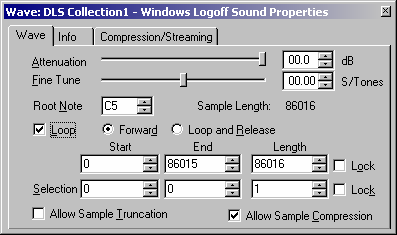
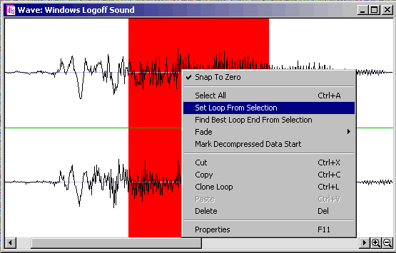
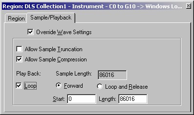
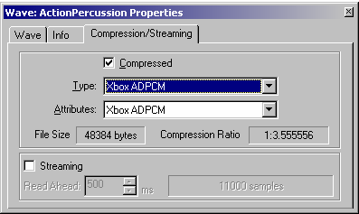
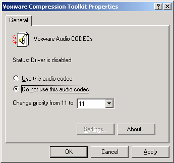

By Scott Selfon, Audio Content Consultant, Content and Design Team, Xbox Advanced Technology Group
This is part of a series of "column-style" white papers on various aspects of Microsoft® DirectMusic® Producer, the content creation tool for DirectMusic. If you would like to see a specific area addressed, please send an e-mail message to content@xbox.com.
One of the more appealing features of the Xbox Media Communications Processor is its ability to handle adaptive differential pulse code modulation (ADPCM) decode in hardware. This means that there is no CPU hit for using ADPCM waves over pulse code modulation (PCM) waves. Better yet, the decode is done during playback on the chip itself, so at no time do you need to decompress the wave into memory. This leads to memory savings generally on the order of about 3.5 to 1.
The ADPCM format for the Xbox® video game system from Microsoft requires any loop points to be placed on 64 sample boundaries for glitch-free playback. But when loop points are first located in a piece of content, we rarely are lucky enough to hit this mark precisely. Of course, there are many techniques for creating effective loops that abide by this requirement. This paper will go through the math of one of the most basic techniques, which involves a combination of resampling and padding the beginning of the wave. We'll also walk through the use of ADPCM waves in Microsoft DirectMusic Producer, the authoring tool used for assembling Downloadable Sounds (DLS) collections as well as segments and scripts, each of which understands ADPCM-compressed waves.
Before we can make a wave's loop points land on 64 sample boundaries, we'll need some information about the wave. I'll list each, followed by its units and then the abbreviation used subsequently:
To help make the calculations above a bit easier, we could just plug in the necessary formulas2 and data into a spreadsheet and automate the calculations. Such a spreadsheet can be downloaded from here.
We type our wave's values into the third row of the spreadsheet, and the fifth and sixth rows automatically display the closest target sampling rates above and below our sampling rate, along with padding and where the new loop points will land.
As we've stated before, DirectMusic Producer's primary purpose has been to expose the features that DirectMusic content supports. DirectMusic Producer does provide basic MIDI sequencing and rudimentary wave editing, but for the most part, these activities are often easier to accomplish using the specialized tools that are already part of a composer's or sound designer's toolbox.
That said, DirectMusic Producer does allow you to adjust loop points in several ways:

Illustration The property page for a wave.
The Loop and Release style of looping is not available to waves in wave tracks. The portion of the wave after the end loop point will be played if the Release value of the volume envelope is long enough.3

Illustration A Wave Editor window. The red area is our selection, which will become our loop points if we choose Set Loop From Selection.

Illustration A region property page. Settings of the wave the region is playing can be overridden here—whether or not it loops, samples that define loop beginning and end, and so on.
When a wave has loop points, playing it from the Transport Controls menu will use its loop points to loop it indefinitely until you press the Stop button. Note that due to limitations of the DLS format, you cannot currently begin playing a wave in the wave editor from anywhere except the beginning of that wave. To play a wave from the middle, add it to a wave track in a segment and make use of the wave object property page's offset field (or just position the red vertical play cursor where you want to hear playback begin).
To compress a wave using the Xbox ADPCM format, install the codec on your Windows 2000 machine.6 At this point, any wave editing software that uses the Audio Compression Manager (ACM) will be able to make use of this codec. In DirectMusic Producer, the codec will appear as a Type drop-down option in the Compression/Streaming tab of a wave's property page. Once selected, select the Compressed check box to compress the wave.

Illustration Setting up a wave for Xbox ADPCM compression.
When the wave is played back (as part of a DLS instrument, within a wave track in a segment, or directly via scripting), you will hear how the wave sounds when decoded. If you are using the Xbox synthesizer,7 you will hear the wave played on the Xbox audio hardware itself. Otherwise, the wave will be played on the Microsoft software synthesizer.
Note that for editing purposes, the original uncompressed wave file will remain intact in design-time files (.dlp, .wvp). Only when the file is runtime saved8 will the uncompressed wave data be removed. This means that uncompressing and recompressing a wave in DirectMusic Producer multiple times will not cause additional degradation.
And that's all there is to it—you now have ADPCM-compressed content ready for Xbox. For most general usage (including any DirectMusic use), your developer does not need to do anything special to alert Xbox that the content is ADPCM. The Xbox MCP will examine the wave header and determine that it is using Xbox ADPCM compression. Compressed waves will display as dark blue waveforms in both the DLS Designer module and when present in wave tracks in segments.
Here are some early known issues with the Xbox ADPCM codec to be aware of and how to work around them. These issues apply to the new hardware in the May 2001 XDK release:
Codec doesn't work—either compression fails or the progress bar in DirectMusic Producer spins forever. This has actually been determined to be an issue with another codec commonly installed on Windows 2000 systems. You should locate and disable the Voxware codec:

If you're still having difficulties, note that the Xbox ADPCM codec does not support 8-bit source waves, so these will fail to compress.
Manual installation of the Xbox ADPCM codec. The codec is automatically installed with the May 2001 XDK release. However, a full XDK install requires a lot of system settings and installed programs that composers and sound designers often do not have. You can manually install the ADPCM codec by downloading ADPCM.exe, a self-extracting executable. Once it is decompressed, follow the instructions in readme.txt. You may need to reboot after installing the codec. Note again that the Xbox ADPCM codec is designed to be run only on Windows 2000 development machines.
DirectMusic Producer problems with
Xbox ADPCM wave files imported into it. DirectMusic Producer may have
difficulty decompressing some wave files previously ADPCM compressed by
another application. For content that needs to be manipulated within
DirectMusic Producer, the general recommendation is to import the wave
files in their uncompressed (PCM) form, and then apply Xbox ADPCM
compression within DirectMusic Producer. This will also avoid issues with
applying Xbox ADPCM compression to a decompressed wave (that is, a wave
decoded from an ADPCM-compressed source), which would otherwise generally
result in loss of quality.
For more information about the Xbox audio hardware, DirectMusic Producer, and DirectMusic concepts, please consult the DirectMusic Producer help document, the DirectMusic Producer FAQ, the Xbox Audio Best Practices guide, or the DirectMusic Producer Terminology white paper, or send an e-mail message to content@xbox.com.
1 "Mod" = modulo, the remainder of a division. Most scientific calculators, including the Microsoft Calculator application (calc.exe), support this feature.
2 To avoid accidentally editing formulas, I've Protected most of the cells of the workbook. If you wish to unprotect and modify the formulas, consult the Microsoft® Excel documentation.
3 For more information on the DAHDSR (Delay-Attack-Hold-Decay-Sustain-Release) envelope, consult the DLS-2 specification at http://www.midi.org, or see the white paper Creating DLS Articulations in DirectMusic Producer.
4 Snap to Zero will choose the closest negative-sloping zero crossing. While this doesn't guarantee smooth loops, it will ensure that the waveform was at least traveling in the same direction at the beginning and end of the loop.
5 One case where this might be useful is where several regions refer to a source wave and you want to loop some of them but play other ones as one-shot waves. For instance, you could build an echo into a DLS instrument by using several regions. The source wave might not loop and have a short release envelope, while the "echoed" regions would have loop points and a longer release envelope. In this case, setting the loop points on the source wave would probably be easiest from an editing perspective. Then for the region that you did not wish to loop, select the Override Wave Settings check box and clear the Loop check box.
6 The codec is supplied with all beta XDKs and is installed automatically when the XDK is installed. Note that the Xbox ADPCM codec is supported only on Windows 2000 machines.
7 If you have the Xbox DirectMusic Producer beta installed, you can select Xbox Synthesizer as the default synthesizer in the MIDI/Performance Options dialog. All DLS playback will be performed on the Xbox. Note that the actual DirectMusic libraries will be running on your Windows 2000 development machine; the Xbox is being used solely as a hardware MIDI device that supports DLS. Wave playback will not be heard. To hear all content (including waves) played on the Xbox using its own DirectMusic libraries, use the Xbox Experimenter module (open from the Add-Ins menu).
8 For more information about runtime versus design-time files, see the white paper Delivering the Goods: File Management Tricks and Tips.
9 As always, be careful when altering your system registry. Changes to registry values can lead to data loss and/or system stability problems.